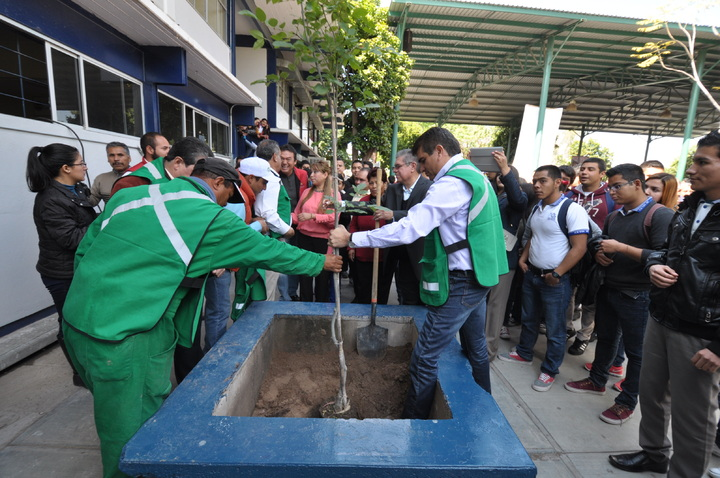
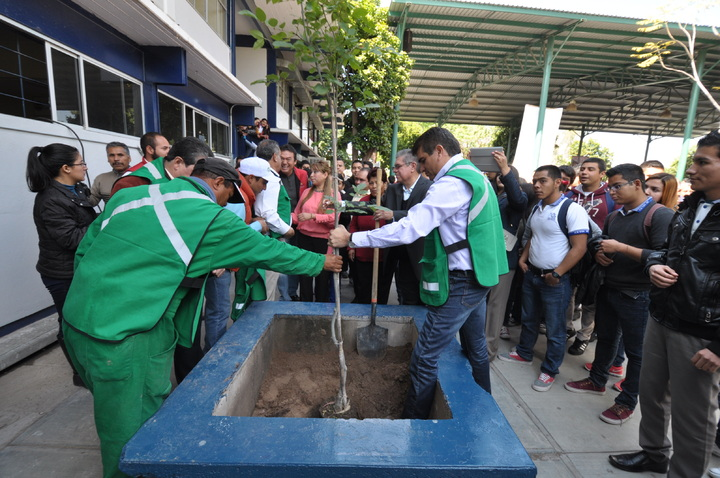

José María Morelos y Pavón
El CETIS 47 es un centro educativo de nivel medio superior ubicado en Gómez Palacio, Durango. Ofrece bachillerato técnico bivalente con especialidades en Programación, Administración de Recursos Humanos y Soporte y Mantenimiento de Equipos de Cómputo.
Contacto
📍 Calzada Lázaro Cárdenas s/n, Armando del Castillo, 35070 Gómez Palacio, Durango, México
☎️ 87-17-90-0866 / 87-17-90-0867
🕰 Fundado: 1 de noviembre de 1979
🏫 Institución pública de nivel medio superior.